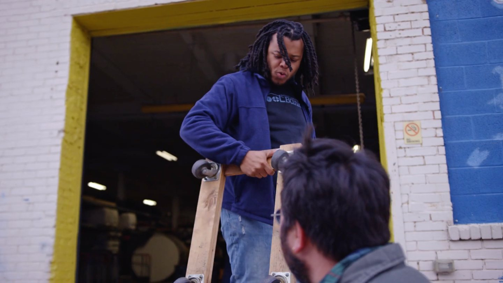
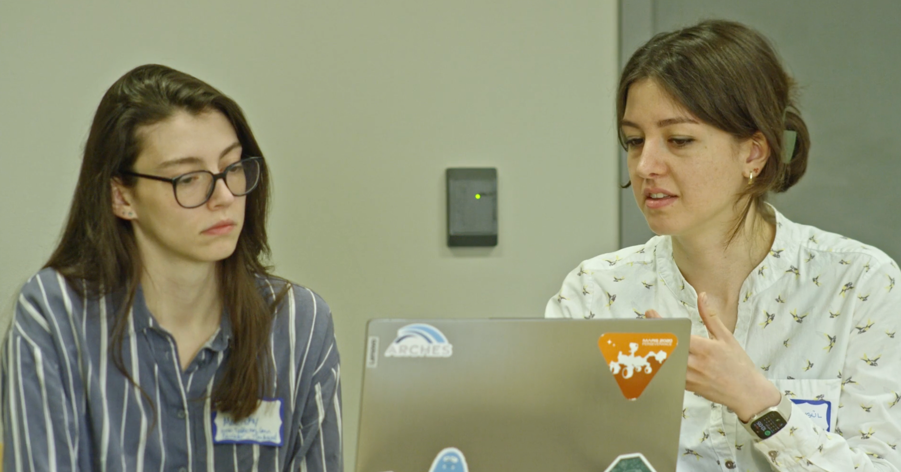

SWAPShare
A RESOURCE
SHARING EXPERIENCE
SHARING EXPERIENCE
Chat with Resa
Resa · listening
Resa
(Ex)Change
A SWAPSHARE FILM · THE REAL-WORLD STORY
(Ex)Change · A SWAPShare film
The film plays from Vimeo. Press play when you're ready; Resa will be here afterward.
THE PEOPLE BEHIND THE SHARING
Every exchange begins with people.
Get to know the SWAP team and explore how sharing resources connects people and organizations.
